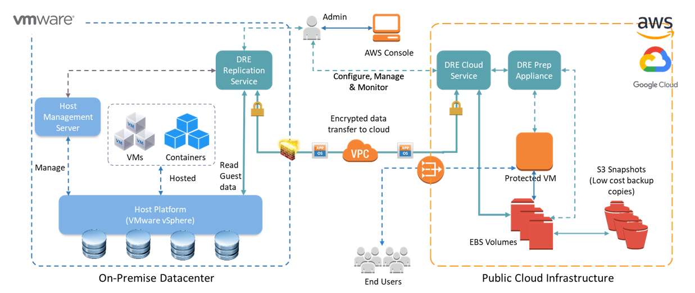

Datamotive Component Architecture
Datamotive Replication Service – a virtual appliance installed in the VMware vSphere environment where the virtual machines to be protected are running under normal circumstances. This appliance also presents a user interface (UI), a CLI and REST APIs for the IT administrators to use under normal circumstances.
Datamotive Cloud Service – a virtual appliance deployed in the public cloud environment (AWS or GCP) where the protected virtual machines will be recovered in the event of a disaster or when VMs are migrated to the target public cloud. This appliance also presents a user interface (UI), a CLI and REST APIs for the IT administrators to use in the event of a disaster and the on-premise Datamotive Replication Service is un-available. Migration and Recovery jobs can be triggered using this interface.
Datamotive Prep Appliance – a Windows virtual appliance deployed in the public cloud environment (AWS or GCP). This appliance is only powered-on and used when recovering or migrating Windows VMs.
